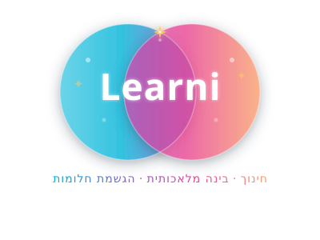

לרני מבית אימפקט.OS · הדרכה לצוותים4 מקטעים, מקל אחדCowork
נותנים מטרה ומעבירים את המקל. Claude רץ את המקטע שלו.
אומרים מה, לא איך. חוזרים, והתוצר מחכה מוכן: קבצים אמיתיים, מסודרים.
מה זה Cowork?
עמית עבודה דיגיטלי: אומרים מה, לא איך. כל כרטיס הוא מקטע במסלול.
נותנים מטרה
מתארים במילים פשוטות איזו תוצאה צריך. לא מפרקים לצעדים, Claude מתכנן לבד.
מתכנן ומבצע
עובד שלב אחרי שלב ויוצר קבצים אמיתיים: Excel עם נוסחאות, מצגות PowerPoint ומסמכים.
בודקים ומאשרים
רואים כל צעד: אילו קבצים נפתחו ומה הוחלט. אפשר לעצור ולכוון מחדש בכל רגע.
שימו לב: זמין רק במסלולים בתשלום, החל מ-Pro. מגיל 18 ומעלה, כך שזה כלי לצוות ולא לתלמידים.
אפליקציה אחת, שלושה מסלולים
מאז 16.9.2026 הצ'אט, Claude Design ו-Cowork נמצאים באותה אפליקציה של Claude. כבר לא בוחרים מצב: מבקשים, ו-Claude מחליט לבד אם זו תשובה מהירה או משימה.
Claude, הצ'אט
חושבים, כותבים ושואלים. התשובה מגיעה בתוך השיחה.
הדרכה נפרדתClaude Design
עיצובים, מצגות ודפים, ישר מתוך השיחה.
הדרכה נפרדתCowork
משימות שלמות על קבצים: תוכנית, ביצוע ותוצר מוכן. גם משימות שחוזרות כל שבוע.
אתם כאןכאן מתמקדים רק במשימות. על השיחה ועל העיצוב יש הדרכות משלהן: ההדרכה על Claude וההדרכה על Claude Design.
איך מגיעים לכאן
אין לשונית נפרדת, וכדי להתחיל לא צריך להתקין כלום.
מסלול בתשלום, מ-Pro ומעלה
נכנסים ל-claude.ai, לאפליקציה במחשב או לאפליקציה בטלפון. בחשבון החינמי עוד אין משימות.
פותחים שיחה רגילה ומתארים משימה
למשל: "סדר את הקבצים האלה ובנה מהם טבלה מסכמת". Claude מזהה שזו משימה ובונה תוכנית.
קבצים מהמחשב? רק דרך Claude Desktop
האפליקציה למחשב (Mac או Windows), פתוחה, עם התיקייה מחוברת. בלי זה המשימה רצה בענן, על קבצים שמעלים לשיחה.
עדיין רואים בתיבת ההודעה בחירה בין Chat ל-Cowork? החשבון עוד לא קיבל את העדכון, וזה קורה בעיקר בחשבונות צוות וארגון. בוחרים Cowork, והעדכון יגיע לבד.
ככה נראית משימה
שלושה מקומות ששווה להכיר. זה איור להמחשה, והכפתורים אצלכם יכולים להיראות קצת אחרת.
- 1
תיקייה מחוברת
רק באפליקציה למחשב. Claude רואה רק את התיקייה שחיברתם.
- 2
התוכנית
מופיעה לפני הביצוע. קוראים אותה, ואפשר לעצור ולכוון בכל שלב.
- 3
מצב האישור
מה נעשה לבד ומה מחכה לכם. ברירת המחדל באפליקציה: Manual.
צילומי המסך יתווספו בהמשך.
התוכנית שלי
איך עובדים עם Cowork
מהמטרה הראשונה ועד משימה שרצה לבד כל שבוע.
מגדירים מטרה, מקבלים תוכנית
ככה נראית משימה ראשונה, בעברית פשוטה.
ההבדל הגדול
בשיחה רגילה מקבלים תשובה. במשימה מקבלים תוכנית, ואחרי האישור עבודה גמורה.
תוצאה, לא צעדים
כותבים מה רוצים לקבל בסוף. את הדרך Claude מתכנן, ואתם רואים כל צעד תוך כדי.
התוצרים: קבצים אמיתיים, לא טקסט
מה יוצא בסוף משימה, ישר לתיקייה או להורדה.
Excel עם נוסחאות
לא טבלה מודבקת. גיליון אמיתי, עם חישובים שממשיכים לעבוד כשמעדכנים.
מצגות ומסמכים
מצגות PowerPoint ומסמכים מעוצבים, מוכנים לעריכה, מתוך החומרים שלכם.
עבודה במקביל
משימה גדולה מתפרקת לכמה מסלולים שרצים יחד, כמו צוות שליחים.
מסמך בעברית? מבקשים במפורש "יישור לימין", ומקבלים קובץ מסודר כבר בפעם הראשונה.
מי מאשר? אתם קובעים
שלושה מצבי אישור. בוחרים לפי כמה המשימה רגישה.
Manual: הכל דרככם
Claude עוצר ומבקש אישור. מתאים לקבצים חשובים ולפעולות שאי אפשר לבטל.
Auto: בודק לבד
Claude בודק מה בטוח ומאשר בעצמו. נוח כשהמשימה מוכרת והקבצים לא רגישים.
Skip: בלי בדיקות
הכי מהיר, והכי מסוכן. לא משתמשים בו על קבצים חשובים.
רשת ביטחון בכל מצב: מחיקה לצמיתות תמיד דורשת אישור מפורש שלכם, ו-Claude ניגש רק לתיקיות שחיברתם.
בענן, או במחשב שלכם
מאז 6.10.2026 משימות חדשות רצות בענן כברירת מחדל, בכל מכשיר. חלק מהיכולות באתר ובטלפון עדיין בבטא.
בענן
- עובד מהאתר, מהאפליקציה במחשב ומהטלפון
- מתחילים במכשיר אחד וממשיכים באחר
- עובד על קבצים שמעלים לשיחה
- קבצי עבודה שלא קיבלתם בחזרה נמחקים בסוף המשימה
במחשב שלכם
- רק דרך Claude Desktop, כשהוא פתוח
- רק לתיקיות שחיברתם
- מתאים לקבצים שיושבים אצלכם במחשב
- המחשב צריך להיות דלוק וער
קבצים שעובדים עליהם בענן מעובדים בשרתים של Anthropic. מידע רגיש, כמו ציונים, פרטי תלמידים או נתוני שכר, לא מעלים ולא מחברים.
משימות קבועות: עובד גם כשאתם לא
מגדירים פעם אחת, והתוצר מגיע בזמן שקבעתם.
מגדירים משימה קבועה
כותבים בשיחה /schedule, מנסחים את המשימה פעם אחת וקובעים מתי היא רצה.
היא רצה בענן, גם כשהמכשיר כבוי
כשהיא עובדת על קבצים בענן או על אפליקציות מחוברות. חוזרים, והתוצר מחכה.
צריכה תיקייה מהמחשב?
אז Claude Desktop צריך להיות פתוח, והמחשב ער בזמן הריצה.
רעיונות: סיכום שבועי של עדכוני הצוות להנהלה, ריכוז חודשי של בקשות שהגיעו למזכירות, או רשימת משימות פתוחות לפני ישיבת צוות.
Claude זוכר את ההקשר
לא צריך להסביר הכל מחדש בכל משימה.
זיכרון משותף
מה ש-Claude למד עליכם בשיחות עובר גם למשימות. מופעל כברירת מחדל, ואפשר לכבות אותו למשימה אחת.
Projects לכל נושא
קבצים והוראות של נושא אחד במקום אחד, למשל "דוחות הנהלה" או "טיול שנתי".
ממשיכים מכל מכשיר
משימה שהתחילה במחשב ממשיכה באתר או בטלפון. הכל נשמר בחשבון.
טיפ: הוראות קבועות כמו "תמיד בעברית, מיושר לימין" כותבים פעם אחת בהוראות של ה-Project, ולא צריך לחזור עליהן.
מתחילים בשיחה, ממשיכים למשימה
הסוד של משימה טובה הוא ניסוח טוב. מחדדים אותו קודם בשיחה.
מחדדים את המטרה
מבקשים מ-Claude, או מכל צ'אט אחר כמו ChatGPT או Gemini, לשאול אתכם שאלות ולנסח משימה ברורה.
מעבירים את המקל
מדביקים את הניסוח בשיחה עם Claude, ובאותה שיחה הוא עובר מתכנון לביצוע. אין מה להחליף.
אין עדיין מנוי בתשלום? מתאמנים ככה בצ'אט חינמי, והניסוח מוכן ליום שתתחילו.
מתי כן, ומתי לא
בלי הבטחות: מה מעולה, מה עולה, ומה עושים עם זה.
מה מעולה, ומה כדאי לדעת מראש
מתי כן
- משימה עם כמה שלבים וכמה קבצים
- עבודה שחוזרת כל שבוע או כל חודש
- צריך Excel או מצגת אמיתיים, לא טקסט
- ערימת מסמכים שצריכה להפוך לתוצר אחד
מתי לא, ומה עושים
- לא בחינםמתחילים ב-Pro, ובודקים אם זה מספיק
- צורך הרבה יותר מכסה משיחה רגילהמנסחים טוב מראש, במקום לנסות שוב ושוב
- מסמך יכול "לשתול" הוראות זדוניותקוראים את התוכנית, ועובדים רק עם קבצים ממקור מוכר
- מידע רגישציונים, פרטים אישיים וסיסמאות לא מחברים ולא מעלים
- התפריטים באנגליתכותבים בעברית ומקבלים עברית. התצוגה בעברית באפליקציה למחשב שופרה באוקטובר 2026
כמה זה עולה
בדולרים.
Free
שיחות בלבד, בלי משימות. Anthropic אומרת שזה יגיע "בקרוב", בלי תאריך.
Pro
או 17$ לחודש בחיוב שנתי. כולל משימות. נקודת הכניסה.
Max
או 200$ לחודש. פי 5 או פי 20 שימוש מ-Pro, למי שמריץ משימות כבדות כל יום.
Team
או 20$ בחיוב שנתי. במסלול Premium 125$, או 100$ בחיוב שנתי. לארגונים גדולים יש Enterprise.
משימות צורכות מהמכסה הרבה יותר משיחה. מתחילים ב-Pro, ועוברים ל-Max רק אם המכסה נגמרת באמצע העבודה. לפני החלטה בודקים ב-claude.com/pricing.
רגע, זה בדיוק אני
שלושה מצבים שכולנו מכירים, ומשימה אחת שפותרת כל אחד מהם.
תיקיית חומרי ההוראה של השנה
עשרות קבצים בלי סדר. משימה אחת ממיינת לפי נושא וכיתה, ובונה רשימה מסודרת של מה שיש.
מחר ישיבת הנהלה
15 קבצי Excel ו-PDF מפוזרים הופכים למצגת אחת ולגיליון מסכם עם נוסחאות.
טופסי ההרשמה לטיול
טפסים שהגיעו בקבצים שונים מתרכזים לטבלה אחת, עם רשימה של מי עוד לא הגיש.
למי זה מתאים
לכל מי שיש לו ערימת קבצים ומשימה שחוזרת על עצמה.
הוראה
ריכוז משובים אנונימיים לטבלה אחת, דפי עבודה מתוך חומרים קיימים, וסידור תיקיית החומרים.
ניהול
דוחות לישיבות הנהלה, סיכום שבועי קבוע, ומיפוי של מסמכי בית הספר.
מזכירות וצוות
ריכוז טפסים ובקשות, טבלאות מעקב, ומכתבים להורים מתבנית אחת.
שימוש אישי
סידור תיקיית ההורדות, ריכוז קבלות לטבלת הוצאות, ותכנון חופשה מקבצים ששמרתם.
שישה טיפים מהשטח
מתחילים במשימה פשוטה
מיון תיקייה קטנה או סיכום של שלושה קבצים. רואים מהר איך זה עובד.
תיקיית ניסיון עם עותקים
לא הקבצים המקוריים. גם בטוח יותר, גם רגוע יותר.
תוצאה, לא צעדים
"טבלה עם עמודות של שם, תאריך וסטטוס" עדיפה על עשר הוראות קטנות.
קוראים את התוכנית
לפני שמאשרים. אפשר לעצור ולכוון מחדש בכל שלב.
Manual לקבצים חשובים
ולפני משימה גדולה שומרים עותק גיבוי של התיקייה.
ניסוח טוב חוסך מכסה
מה ששורף מכסה הוא ניסיונות חוזרים. דקה של ניסוח מדויק חוסכת כמה ריצות.
שאלות שכולם שואלים
לוחצים על שאלה כדי לפתוח את התשובה.
זה בחינם?
לא. משימות דורשות מנוי בתשלום, החל מ-Pro. בחשבון החינמי יש שיחות, וזו דרך טובה להכיר את Claude.
זה עובד בעברית?
כן. כותבים משימות בעברית ומקבלים תוצרים בעברית. התפריטים באנגלית, ובקבצים כדאי לבקש במפורש יישור לימין.
חייבים להתקין משהו?
לא. משימות רצות בענן, מהאתר ומהטלפון. את Claude Desktop צריך רק כדי לעבוד על קבצים ותיקיות שבמחשב.
בטוח לתת לו גישה לקבצים?
בגבולות שאתם קובעים: רק תיקיות שחיברתם, ומחיקה לצמיתות תמיד באישור. ועדיין, מידע רגיש לא מחברים, ובמשימות רגישות נשארים ב-Manual.
אני עדיין רואה Chat ו-Cowork בנפרד. למה?
החשבון עוד לא קיבל את העדכון מ-16.9. בוחרים Cowork ועובדים כרגיל. העדכון יגיע לבד.
אפשר לתת את זה לתלמידים?
לא. Claude מיועד לגיל 18 ומעלה. זה כלי לצוות.
בדקו את עצמכם
שלוש שאלות. נסו לענות בקול לפני שפותחים.
מה תמיד דורש אישור מפורש, בכל מצב אישור?
מחיקה לצמיתות של קבצים.
מתי חייבים את האפליקציה למחשב?
רק כשהמשימה צריכה קבצים או תיקיות שנמצאים במחשב שלכם. כל השאר רץ בענן.
אילו קבצים Claude יכול לראות במחשב שלכם?
רק את התיקיות שחיברתם בעצמכם.
עכשיו אתם
לא צופים, עושים. פותחים מחשב, והמקל אצלכם.
משימה ראשונה, ב-5 דקות
יוצרים תיקיית ניסיון
על שולחן העבודה, עם 5 עד 10 עותקים של קבצים. לא המקור.
פותחים את Claude Desktop ומחברים אותה
אין אפליקציה? מעלים שלושה קבצים לשיחה באתר.
מדביקים את המשימה
מהכרטיס שבצד, או מנסחים משלכם: מטרה אחת ברורה.
קוראים את התוכנית ומאשרים
ועוקבים אחרי הצעדים על המסך.
בודקים את התוצר
ושואלים: "מה עשית, ולמה?"
שלושה דברים לזכור
המקטע האחרון. כל כרטיס נצבע כשהמקל עובר בו.
אומרים מה, לא איך
מטרה אחת ברורה. Claude מתכנן ומבצע, אתם מאשרים ומכוונים.
השליטה אצלכם
רק תיקיות שחיברתם, מחיקה תמיד באישור, ומידע רגיש לא מעלים.
המכסה היא משאב
משימות צורכות הרבה יותר משיחה. ניסוח מדויק במקום ניסיונות חוזרים.
נסו עוד היום
בחרו תיקייה אחת מבולגנת, ותנו ל-Claude לרוץ איתה את המקטע שלו.
מתחילים בשיחה
ב-claude.ai, במסלול בתשלום. לקבצים שבמחשב: האפליקציה Claude Desktop.
אתגר של 5 דקות
תיקיית ניסיון, משימה אחת, תוכנית שקראתם. רוצים משוב? שלחו לנו.